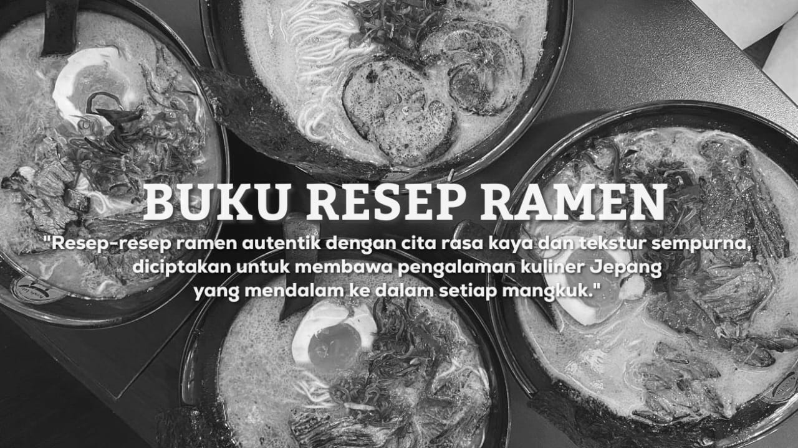

Terbuat dari pasta fermentasi kedelai atau kacang, hidangan ini menampilkan kuah kaya yang memberikan sensasi gurih dengan sentuhan asin yang memikat. Kamu akan terpesona oleh perpaduan rasa yang tak terlupakan dalam setiap suapannya Kuah miso ini biasanya dibuat dengan mencampur pasta miso dengan kaldu ayam atau daging sapi yang telah direbus dalam waktu yang cukup lama. Proses ini menghasilkan kuah dengan cita rasa dan aroma yang khas.
"Buku Resep Ramen" adalah panduan lengkap untuk para pecinta ramen yang ingin memasak hidangan Jepang otentik di rumah. Buku ini menawarkan berbagai resep ramen, seperti Tonkotsu, Shoyu, Miso, Shio, dan Abura Soba, dengan langkah-langkah mudah diikuti. Setiap resep dilengkapi tips untuk menghasilkan kaldu, mie, dan topping yang sempurna. Selain itu, buku ini juga memberikan variasi topping seperti chashu, telur setengah matang, tauge, dan nori, untuk memperkaya rasa ramen sesuai selera pribadi. Cocok bagi pemula maupun ahli masak, buku ini membantu Anda menciptakan ramen lezat di rumah.